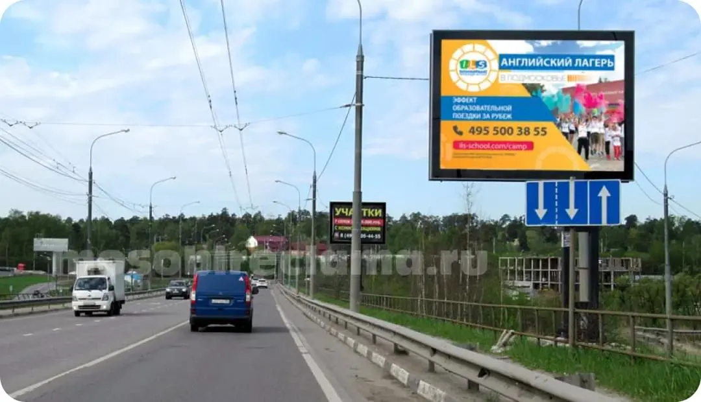

Реклама на скроллерах.
Разместить рекламу на скроллере H1
Реклама на скроллерах от рекламного агентства «Мособлреклама» H2
SmartLED
На центральных улицах и площадях, вдоль автотрасс и шоссе крупных городов устанавливают скроллеры, на которых одновременно можно показывать сразу несколько рекламных изображений, которые одно за другим сменяют друг друга. Вращающиеся элементы рекламной конструкции позволяют поочередно демонстрировать до 6-8 рекламных роликов. Скроллеры называются так от английского слова scroll-вращение. Смена изображений происходит в автоматическом режиме, достаточно лишь настроить нужный интервал времени, во время которого показывается каждый из рекламных изображений.
Скроллеры — это ситиборды, световые короба размером 2,7х3,7м. Изображения сменяются по мере необходимости и в зависимости от желания рекламодателей. Внутренняя люминесцентная подсветка придает скроллерам особую яркость, что позволяет использовать этот вид рекламы даже в ночное время. Благодаря своей заметности, скроллеры позволяют сделать рекламу очень эффективной.
В крупных городах такая реклама пользуется большой популярностью, ее видно издалека, и одну рекламную поверхность могут использовать сразу несколько рекламодателей, а цена размещения наружной рекламы значительно ниже других форматов - щитов 3х6, цифровых суперсайтов, медиафасадов .
Скроллеры Profsign Glass H2
Особенностями скроллеров Profsign стандарта Glass являются:
- лицевая поверхность из прозрачного стекла;
- несущая рама из стали облицована конструкционным алюминиевым профилем;
- створки заполнены каленым стеклом 8 миллиметровой толщины или стеклом-триплекс, в зависимости от пожеланий заказчика;
- особая конфигурация профилей позволяет крепить створки к корпусу скроллера без петель.
Преимущества использования скроллеров для наружной рекламы H2
- Скроллеры имеют сравнительно невысокую стоимость.
- Закаленное стекло, установленное в створках, имеет антивандальные качества, благодаря чему срок службы конструкции большой.
- Внутренняя подсветка позволяет использовать конструкцию круглосуточно в любое время года.
- Эксплуатировать скроллеры можно в температурном режиме от -30 до +55 градусов Цельсия.
При установке скроллеров возможны дополнительные опции, например:
- может быть увеличена высота опоры;
- дополнительно можно подключить светодиодные лампы;
- устанавливается система резервного питания;
- можно сместить опору в сторону, придавая конструкции оригинальность;
- установка стекла «триплекс».
Способы установки скроллеров H2
В зависимости от назначения и места использования скроллеры могут быть установлены в разных позициях. Например, скроллер можно установить на опоре или прикрепить его к стене.
Вот какие варианты установки бывают:
- настенный динамический, при котором постоянно происходит смена изображений;
- на опоре односторонний динамический, который устанавливают задней частью к зданию или скрытому от взоров участку;
- динамически-статический скроллер двухсторонний, устанавливают на опоре в местах с обзором с двух сторон. (Такой скроллер может менять изображения с одной стороны и показывать неподвижную картинку с другой. Задняя статическая сторона может быть направлена на проезжую часть или тротуар, где люди видят картинку в течение всего нескольких минут. Они не успевают устать от одного изображения, в то время, как другая часть зрителей, находящаяся например, в зале ожидания вокзала, постоянно смотрит на экран и требует смены изображений);
- скроллер на опоре двухсторонний, динамический с двух сторон. Его устанавливают в местах с обзором с разных сторон.
Для справки: H3
Первые скроллеры были установлены в Москве в 2002 году. Позже, в 2006 году властями Москвы было принято решение снести все рекламные конструкции размером более 10 квадратных метров. Это повлекло снос крупных ситибордов с роллерными механизмами. Отечественные производители до сих пор не могут производить подобные конструкции, а импортные стоят очень дорого. Вот почему наибольшей популярностью пользуются только небольшие конструкции с вращающимся механизмом, размером 2,7х3,7м. Высококачественные конструкции собираются из алюминиевых профилей, модернизируются и оснащаются роллерными механизмами, позволяющими управлять скроллерами и делать рекламу динамической.